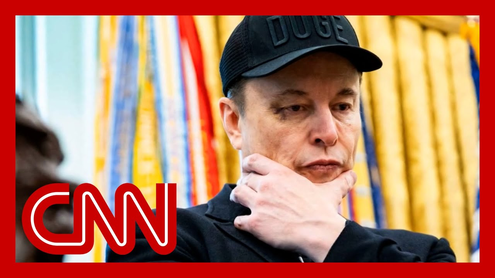

【“令人作呕的畸形产物”：马斯克猛烈抨击特朗普的议程法案】
Summary: Elon Musk criticizes a massive congressional spending bill, calling it a "disgusting abomination," while Republicans scramble to pass it amid internal divisions and concerns over debt.
摘要： 埃隆·马斯克批评一项庞大的国会支出法案，称其为“令人作呕的畸形产物”，而共和党人则在内部意见分歧和对债务的担忧中匆忙推动该法案通过。

⏱️ Estimated Reading Time: 17 min
On Capitol Hill Donald Trump's a The big, beautiful bill is facing a critical test.
在国会山，特朗普的“又大又美”的法案正面临关键考验。
Can Republicans make enough chan to get the bill through the Sena without making so many changes?
共和党人能否在不做太多改动的情况下让该法案在参议院通过？
But it dies when it goes back to the House.
但如果它回到众议院就会夭折。
Republican leaders have imposed a July 4th deadline on themselve so they've given themselves just one month to get this bill to the presiden.
共和党领导人给自己设定了7月4日的最后期限，因此他们只有一个月的时间将该法案提交给总统。
And considering just how big the and that it's not quite beautifu for all of the Republicans in th.
考虑到该法案的规模以及它并非对所有共和党人来说都“很美”。
That timeline is, shall we say, ambitious.
这个时间表可以说是雄心勃勃。
We're going through a lot of changes right now, but we want the House to recognize that bill, what actually comes back?
我们现在正在经历很多变化，但我们希望众议院能认可该法案，实际会有什么结果？
Surely 53 Republican senators will go to s some changes.
肯定会有53名共和党参议员提出一些修改。
This bill only passed the House by one vote.
该法案在众议院仅以一票之差通过。
And whatever changes we make, it's got to go back there for ap.
无论我们做什么修改，它都必须回到那里以获得批准。
We've got, as you know, a lot of our members who would like to see more in te of spending cuts.
如你所知，我们有很多成员希望看到更多的支出削减。
But in the end, it's all about t.
但归根结底，这全都关乎……
And it's what gets us 51 in the and what gets us to 18 in the Ho.
这是让我们在参议院获得51票和在众议院获得18票的关键。
So that, of course, was Senate Majority Leader John Thun.
当然，这是参议院多数党领袖约翰·图恩说的。
Let's do that math.
让我们算算这笔账。
He can only afford to lose three Republican votes.
他只能承受失去三张共和党选票的代价。
Already four GOP senators have s they're not on board.
已经有四名共和党参议员表示他们不支持。
Math is very it's so simple.
数学非常简单。
I will do it on television.
我会在电视上算给大家看。
A half a dozen more Republicans appear to be on the fence here.
还有大约六名共和党人似乎持观望态度。
So why is that?
为什么会这样？
For many of them, it is the budget analysis that says that the
对许多人来说，预算分析显示该法案将从医疗补助计
bill would cut billions from Medicaid while adding trillions to the national debt.
划中削减数十亿美元，同时增加数万亿美元的国债。
One of these holdouts, the Kentucky Senator Rand Paul, of course, finds himself at the center of Donald Trump's attention.
其中一位反对者，肯塔基州参议员兰德·保罗，当然发现自己成为特朗普关注的焦点。
Not always a positive thing.
这并不总是好事。
President writing this online quote, Rand votes no on everything, but never has any practical or constructive ideas.
总统在网上写道：“兰德对所有事情都投反对票，但从未有任何实际或建设性的想法。”
His ideas are actually crazy.
他的想法实际上很疯狂。
Parentheses. Losers. Exclamation point. End quote.
（失败者！）
Senator Paul later told reporters that he wants to vote yes on the bill.
保罗参议员后来告诉记者，他想对该法案投赞成票。
But.
但是。
But conservative Republicans vote for this.
但保守派共和党人会投票支持这个。
There is no conservative opposit.
没有保守派的反对。
There is no.
没有。
They will own it.
他们将为此负责。
The debt will be owned by the Republicans is no more pointing fingers at the Democrats and saying, oh, they're the big spenders.
债务将由共和党人承担，不能再指责民主党人说他们是挥霍者。
It'll be all on Republicans shou.
这将全部落在共和党人身上。
Okay, so all of that unfolding this morning through l.
好的，所有这些都在今天上午展开。
And then comes this this afterno.
然后今天下午发生了这件事。
Elon Musk entered the chat.
埃隆·马斯克加入了讨论。
The now former Doge head taking to his platform formerly known as
这位前狗狗币领袖在他以前称为Twitter
Twitter, writing this quote, I'm sorry, but I just can't stand it anymor.
的平台上写道：“抱歉，但我再也无法忍受了。”
This massive, outrageous, pork f congressional spending bill is a disgusting abomination.
这项庞大、离谱、充满政治分肥的国会支出法案是一个令人作呕的畸形产物。
He said shame on those who voted.
他说那些投票支持的人应该感到羞耻。
You know you did wrong. You know it.
你们知道自己做错了。你们心知肚明。
All right. Our panel is here.
好的。我们的专家小组在这里。
And we're also joined by CNN's Manu Raju, who's live for us on Capitol Hil.
我们还连线了CNN的曼努·拉朱，他正在国会山为我们进行现场报道。
Manu.
曼努。
Elon Musk is not the first person to present the content in that p about a bill that adds trillions of dollars.
埃隆·马斯克并不是第一个对一项增加数万亿美元支出的法案提出这种批评的人。
He sounds like a lot of Republic.
他听起来像很多共和党人。
but I've covered you've covered probably in your time on the Hil.
但我在国会山报道期间可能你也报道过。
however, we are in different tim.
然而，我们处于不同的时代。
and it's a pretty remarkable sta from someone who is as close as he is to President Donald Trump.
对于一个与特朗普总统关系如此密切的人来说，这是一个相当引人注目的表态。
What has been the reaction from the Hill in the hours since that tweet came out?
自那条推文发布后的几小时里，国会山的反应如何？
It's completely scrambled the politics up here.
这完全打乱了这里的政治局势。
Are Democrats cheering.
民主党人在欢呼吗？
There's Chuck Schumer coming out to his weekly press c touting this
查克·舒默出来参加每周新闻发布会，吹捧埃隆·马斯克
post by Elon Musk, Hakeem Jeffries, the Democratic leader, doing the same thing.
的这条帖子，民主党领袖哈基姆·杰弗里斯也在做同样的事情。
Republicans on the other hand, pushing back.
另一方面，共和党人则在反击。
And the speaker of the House, Mike Johnson, who I caught up with in the immediat aftermath of that post, he told me that
众议院议长迈克·约翰逊在该帖子发布后立即与我交谈，他告诉我他
he has spoken at with Musk yesterday, and he said that he had tried to explain to Musk the virtues of the bill.
昨天与马斯克谈过，并表示他曾试图向马斯克解释该法案的优点。
And he also suggested that Musk perhaps could be driven in part by his opposition
他还暗示，马斯克的反对可能部分是因为该
because the bill would call for the elimination of certain tax incentives for electric vehicles.
法案要求取消对电动汽车的某些税收优惠。
And of course, Elon Musk owns Te.
当然，埃隆·马斯克拥有特斯拉。
Is this Elon is missing it.
这是埃隆误解了吗？
Okay.
好的。
And it's it's not personal.
这并不是针对个人。
I know that the the EV mandate very important to that is going away because the government should not be subsidizing
我知道电动汽车的授权非常重要，它将被取消，因为政府不应该补贴这些
these but for him to come out and hand the whole bill is, is, to me, just very disappointing, very su.
，但他站出来反对整个法案，对我来说非常令人失望，非常令人惊讶。
A lot of the conversation I had with him yesterday, and I asked Johnson whether or
昨天我和他谈了很多，我问约翰逊他是否实际上
not he is, in fact, accusing of attacking this bill because of his ownership of Tesl.
是在指责马斯克因为拥有特斯拉而攻击该法案。
He said, quote, I'm going to let others draw their own conclusions about.
他说：“我让别人自己得出结论。”
But there are significant concer among Senate Republicans about the potential impact on the debt and deficits.
但参议院共和党人对该法案可能对债务和赤字产生的影响有重大担忧。
The House pass bill, according to the Congressional Budget Office, would add nearly $4 trillion to deficits over the next severa.
根据国会预算办公室的数据，众议院通过的法案将在未来几年增加近4万亿美元的赤字。
and that is something that some conservative Republica senators have raised concerns ab including one senator,
这是一些保守派共和党参议员提出的担忧，包括犹他州共和党参议员
Utah Repu John Curtis, who told me earlier today that he has significant concerns about the
约翰·柯蒂斯，他今天早些时候告诉我，他对赤字和众议院法案有重
d the deficit and the House bill, according to CBO, with raised by a few trillion dollars.
大担忧，根据国会预算办公室的数据，该法案将增加数万亿美元赤字。
That concern is hugely concernin.
这种担忧非常令人担忧。
And if you look at the House bil just to simplify it a little bit we're going to spend in
如果你看看众议院的法案，简单来说，我们将在未来十年支出比收入多
the next ten years about $20 more than the revenue we bring i and they're cutting 1.5 trillion over 20 trillion.
约20万亿美元，而他们将在20万亿美元的基础上削减1.5万亿美元。
Most of us wouldn't do that in our businesses and their home.
我们大多数人不会在自己的企业和家庭中这样做。
And we certainly do it do it in the state of Utah.
我们在犹他州当然也不会这样做。
And so that's a big concern to m.
所以这对我来说是一个很大的担忧。
Think.
想想看。
He went on to tell me that there be a significant amount of
他接着告诉我，为了让他支持
work that still needs to be done in order for him to support this.
该法案，还需要做大量的工作。
And that's what I'm hearing from a lot of Republican senators.
这是我听到很多共和党参议员说的。
Casey, they want a lot of change.
凯西，他们想要很多改变。
But the Senate majority leader, Thune, wants to push this throug get this through the Senate and onto the president's desk by July 4th.
但参议院多数党领袖图恩希望推动该法案在7月4日前通过参议院并提交总统签署。
And that will require a lot of c within his own conference, because right now, people
这将需要在他的党内进行大量协调，因为现在人们都在坚
are digging in and taking their positions and hoping ultimately, the leadership listens to their.
持自己的立场，并希望领导层最终能听取他们的意见。
when you started this off, sayin the politics have been scrambled that's that's your headline, for
当你开始说政治局势已经被打乱时，这就是你今天的头条，曼
today, our our banner on the Manu, you thank you, as always, for your greatrillioneporting.
努，我们横幅上的标题，一如既往地感谢你的出色报道。
Our panel joins us now, CNN legal analyst Elliot Williams, national political reporter for The Washington
现在我们的专家小组加入我们，CNN法律分析师埃利奥特·威廉姆斯，《华盛顿邮报》全国政治记者萨布
Post, Sabrina Rodriguez, Democratic strategist agent Adrian Elrod, and CNN senior political commentator Scott Jenn.
丽娜·罗德里格斯，民主党策略师阿德里安·埃尔罗德，以及CNN高级政治评论员斯科特·詹宁斯。
Welcome to all of you.
欢迎各位。
Thank you all for being here.
感谢大家来到这里。
Scott Jennings, we've got a new tweet just in from Elon Musk.
斯科特·詹宁斯，我们刚刚收到埃隆·马斯克的一条新推文。
Hey, you look excited.
嘿，你看起来很兴奋。
so he writes this quote in Novem next year, we fire all politicians who betrayed the American people.
他写道：“明年11月，我们将解雇所有背叛美国人民的政客。”
He's, quote, treating someone wh you know, we'll figure out exactly what th the things are that he's criticizing him for.
他“对待某人”，你知道，我们会弄清楚他批评的具体是什么。
and this also coming as CNN is reporting here, that white House officials
与此同时，CNN报道称，白宫官员告诉CNN
are t CNN that they were surprised by Elon Musk's scathing criticism on Tuesday.
，他们对埃隆·马斯克周二的尖锐批评感到惊讶。
Yes.
是的。
Were you Scott Jennings surprise.
斯科特·詹宁斯，你感到惊讶吗？
And, it does seem to scramble the pol.
而且，这似乎确实打乱了政治局势。
a I wasn't surprised because I had spoken to him abou what was motivating his service in Washington
我并不感到惊讶，因为几周前我曾与他谈过他在华盛顿服
a few weeks ago, and he told me he's here to try to make America not go ba.
务的动机，他告诉我他在这里是为了努力不让美国倒退。
I mean, this is on his mind.
我的意思是，这是他关心的事情。
We have a $36 trillion debt, and it should be on all of our m.
我们有36万亿美元的债务，这应该是我们所有人都关心的问题。
So that's number one.
这是第一点。
number two, I don't think that we're done with the bill ye.
第二，我认为我们还没有完成该法案。
I mean, as you know, and as a reporting lots of changes are going to have to be
我的意思是，如你所知，作为报道，为了让它通过参议院
made in the Senate to get it out of the Senate, and then those will have to be reconciled.
，将需要在参议院进行很多修改，然后这些修改将需要协调。
The reconciliation will have to be reconciled with the House, and more changes still may come.
协调将需要与众议院达成一致，可能还会有更多修改。
so, you know, I guess I want multiple things.
所以，你知道，我想我想要多件事。
I want the president to get his and the agenda, the core part of and the thing that is not negoti is
我希望总统能实现他的议程，核心部分是不可谈判的，包括延长并使减税永
the extension and making permanent the tax cuts, investment in border security, energy deregulation, the biggest welfare reform, in recent history.
久化，投资边境安全，能源放松管制，以及近代历史上最大的福利改革。
I mean, these are non-negotiable I think, to the president, because it's what he ran on.
我的意思是，我认为这些对总统来说是不可谈判的，因为这是他竞选时的承诺。
But the Republicans should liste to Elon.
但共和党人应该听听埃隆的意见。
when it comes to the national de we have work to do on this.
当涉及到国家债务时，我们在这方面有工作要做。
We have governing responsibility and maybe it doesn't come in thi but the rescissions package is t.
我们有治理责任，也许这不会在这次实现，但撤销拨款方案是……
And our other work to come here getting a handle on a $36 trillion
我们未来的其他工作，控制36万亿美元的债务
debt is not going to be but it is necessary because this is not sustainable.
并不容易，但这是必要的，因为这是不可持续的。
Yeah Adrienne.
是的，阿德里安。
All right.
好的。
I mean this has put Chuck Schume on the same side of you as Elon.
我的意思是，这让查克·舒默和你站在了与埃隆同一立场。
Yeah I mean who would have thoug that would have happened.
是的，谁会想到会发生这种事。
look a couple things I don't rea.
看，有几件事我并不真正……
At the end of the day, how many people are going to be
归根结底，有多少人会因为埃隆·马斯
impacted by Elon Musk, you know, tweeting that he doesn't support this bill?
克发推表示不支持该法案而受到影响？
I mean, he's deeply unpopular among Democrats.
我的意思是，他在民主党人中非常不受欢迎。
He think certainly waning, or less popular among Republican.
他在共和党人中的受欢迎程度肯定在下降，或者说不如以前受欢迎。
He's out of Washington now.
他现在已经离开了华盛顿。
I think Mike Johnson actually was was right that he is concerned about this because it
我认为迈克·约翰逊实际上是对的，他对此感到担忧，因
doesn't have the tax credits for the EVs, and that's going to affect his i.
为它没有对电动汽车的税收抵免，这将影响他的利益。
so I think that that's one categ.
所以我认为这是一类原因。
But look, at the end of the day, here's the bottom line.
但归根结底，这是底线。
This bill at its current state is $4 trillion.
该法案目前的状态是4万亿美元。
You talk about the fact that we $36 trillion in debt.
你谈到我们有36万亿美元的债务。
That is absolutely a challenge that we Americans have to deal w.
这绝对是我们美国人必须面对的挑战。
And it's something that, Congress has to deal with.
这是国会必须处理的事情。
And the House could only get this bill passed if it was $4 trillion.
而众议院只有在法案是4万亿美元的情况下才能通过它。
So I think reconciliation is going to be a really important.
所以我认为协调将非常重要。
But they passed this bill in the by the hair of it's 2010, ten.
但他们通过这项法案简直是勉强成功，就像2010年那次一样。
So I think the next few weeks are going to be very very interesting to see what negotiations
所以我认为接下来的几周会非常有意思，看看接下来的谈判如何进行。
Well, it's only one bill because Mike Johnson basically I can only do one vote. Yeah.
其实只有一个法案，因为迈克·约翰逊基本上只能安排一次投票，对。
Like I don't think that was right
我觉得那样做不太妥当。
I mean, multiple votes would have been voted.
我是说，应该进行多次投票才对。